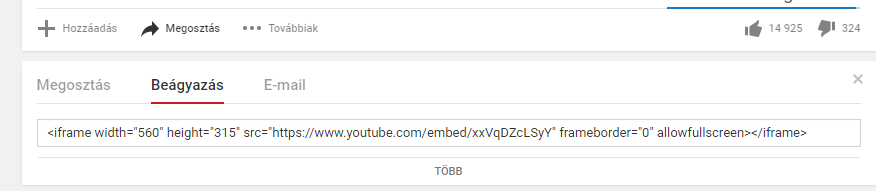

10. Lecke: Grafika, Médiaelemek, Reszponzivitás
Grafika
Lehetőség van a HTML nyelvben, hogy a weboldalra nem túl bonyolult ábrák kirajzolására. Erre két mód is rendelkezésünkre áll.
Canvas
Ennek segítségével egy vásznat készíthetünk az oldalra, amelyre JavaScript segítségével lehet ábrát rajzoltatni. A rajzolás után az ábra fix és eseményeket se lehet hozzá rendelni.
SVG
Az SVG segítségével objektum alapú, vektorgrafikus ábrákat lehet a weboldalra kihelyezni, amelyek átalakíthatóak és eseményeket is lehet definiálni. Az ilyen ábrák minőségromlás nélkül átméretezhetőek és felbontásfüggetlenek.
Az oldalra egy svg elemet kell beilleszteni, amelyre lehet az ábrákat ráhelyezni. Ennek a méretét lehet megadni a magasságával és szélességével.
<svg width="500" height="400"> ... </svg>
Különböző formájú grafikákat lehet készíteni, amelyeknek többek között az elhelyezkedését (koordinátáit), méretét (x és y irányú), kitöltését, határvonalát lehet megadni. Egyes tulajdonságait meg lehet adni attribútummal és CSS segítségével is. CSS segítségével több formázási lehetőség áll rendelkezésre.
Téglalap (HTML formázás)
<rec x="10" y="20" width="200" height="100" fill="black" stroke="red" stroke-width="10">
Kör (CSS formázás)
<circle cx="50" cy="50" r="100" style="fill:red;stroke:yellow;stroke-width:5">
Vonal
<line x1="10" y1="10" x2="50" y2="100" style="stroke:rgb(100,100,100);stroke-width:3">
Szöveg
<text x="10" y="30" fill="black">Kiírt szöveg</text>
Multimédia elemek
A multimédiás tartalmak ma már gyakori elemei a weboldalaknak. Az internetes sávszélesség növekedésével és az eszközök hardveres erősödésével, szoftveres támogatottságával a weboldalak multimédiás tartalmai hétköznapivá váltak. Míg korábban ezek weboldalra beillesztése nem volt egyszerű, a HTML5 új tag-eket vett fel a nyelvbe, amelyek szerepe pont az ilyen elemek kezelése.
Videó beágyazás
Míg korábban a videót csak bővítményekkel lehetett az oldalra beágyazni, a HTML5 leegyszerűsítette ezt a folyamatot. Bevezette a video tag-t, amelyben adható meg a source tag segítségével a lejátszandó videó forrása, valamint egy helyettesítő szöveg, ha a felhasználó böngészője nem támogatja a video tag-t.
A HTML5 alapvetően három videó formátumot támogat: MP4, WebM, Ogg. A böngésző támogatottsága ezeknek a formátumoknak eltérő, az MP4 a legjobban támogatott. Ha lehetséges, érdemes a videót több formátumban is beilleszteni, így, ha a böngésző nem ismeri az egyik formátumot, a másikat még le tudja játszani.
Meg lehet adni a lejátszó méretét, ahol célszerű figyelembe venni a videó eredeti méretét. Valamint megadható, hogy a legyenek-e vezérlő gombok (controls), elinduljon-e automatikusan a lejátszás (autoplay) és ismételje-e a lejátszást, ha a videó végére ért (loop).
<video width="600" height="400" controls autoplay loop>
<source src="film.mp4" type="video/mp4">
<source src="film.ogg" type="video/ogg">
Az ön böngészője nem támogatja ezt a videólejátszást
</video>
Audió beágyazás
Hanganyag lejátszását hasonlóan kell beágyazni a weboldalra, mint a videóét. Itt az audio tag adja a lejátszót, amibe ugyanúgy a source tag-gel lehet a forrás hangfájlt megadni. A vezérlő gombok, az automatikus lejátszás és az ismételt lejátszás itt is beállítható ugyanazokkal az attribútumokkal. A támogatott hangfájl formátumok az MP3, wav, ogg, melyek közül az MP3 a teljesen támogatott.
<audio controls autoplay loop>
<source src="zene.mp3" type="audio/mpeg">
<source src="zene.ogg" type="audio/ogg">
Az ön böngészője nem támogatja ezt a hanglejátszást
</audio>
YouTube beágyazás
Ha egy beillesztendő videó megtalálható a YouTube megosztón, akkor onnan is be lehet ágyazni, anélkül, hogy azt le kellene tölteni. Valamint, ha nem akarunk a formátumokkal bajlódni, esetleg nincs elég hely a tárterületünkön, hogy tároljuk a videót, akkor megoldás, ha azt feltöltjük a YouTube szerverére és onnan ágyazzuk be a saját oldalunkra. Ilyenkor csak a keresett videónak az azonosítóját kell ismerni, amelynek segítségével az elérési útja összeállítható. A lejátszó beillesztése pedig egy beágyazott kerettel (iframe) történik, lásd 6. lecke).
<iframe width="560" height="315" src="https://www.youtube.com/embed/xxVqDZcLSyY" frameborder="0" allowfullscreen></iframe>
Az egyszerűség kedvéért a YouTube le is generálja a beágyazáshoz szükséges kódot. Ha kívánt videónál a lejátszó alatt a Megosztás pontot választjuk, majd a megjelenő lehetősége közül a Beágyazást, akkor egy mezőben megjelenik a szükséges iframe forrása. Ezt a kódot kell kimásolni és beilleszteni a saját oldalunkra.

28. Ábra YouTube videó beágyazásához szükséges kód generálása
A linkhez lejátszási paramétereket lehet illeszteni az űrlapoknál megismert módon (lásd 8. lecke). Ezen paraméterek esetén az 1 érték jelenti a bekapcsolást és 0 a kikapcsolást. Az autoplay paraméterrel bekapcsolható az az automatikus lejátszás, a loop paraméterrel a folyamatos ismétlés a controls paraméterrel a vezérlő gombok kihelyezése.
<iframe width="560" height="315" src="https://www.youtube.com/embed/xxVqDZcLSyY?autoplay=1&controls=0&loop=1"></iframe>
Reszponzivitás
Mivel manapság nagyon sokféle eszközt használnak a weboldalak megtekintésére, nagyon nehéz olyan oldal elrendezést kialakítani, amelyik mindegyiken jól néz ki. Egy nagy monitoron egy kicsire méretezett oldal csúnyán néz ki, míg egy mobiltelefonon a túl aprólékos oldal nem fér el, vagy túlságosan zsúfolt, összetett lehet. Erre egy egyre népszerűbb megoldás a reszponzív oldal készítése. A reszponzivitás lényege, hogy az oldal a böngésző méretéhez képest átalakítja magát olyanra, amely megfelelően néz ki és használható az adott méretben. Az oldalt alapvetően négy mérethez igazítja: mobiltelefon, tablet, kisebb monitor (laptop) és nagy monitor. Ehhez első sorban az elemek átméretezését, láthatóságát (elrejtését), elmozgatását, átrendezését használja. Ehhez első sorban megfelelő tárolókat kell készíteni és azokat megfelelően kell formázni.
Egy oldalt saját tudásunk szerint is kialakíthatunk ilyenre, de már léteznek keretrendszerek, amelyek már tartalmazzák a szükséges eszközöket, formátumokat a reszponzív oldal kialakításához. A két legnépszerűbb ilyen keretrendszer a Bootstrap és a W3.CSS. Mindkettő ingyenes, böngésző-független és teljes mértékben megfelel egy korszerű reszponzív oldal kialakításához. Ezen kívül mindkét keretrendszer tartalmaz rengeteg olyan előre elkészített és megformázott elemet, amelyek gyakran szükséges egy weboldalon, például panelek, menük, gombok, modális ablakok, stb. Megfelelnek az úgy nevezett mobile-first filozófiának, ami azt jelenti, hogy egy oldal első sorban a mobilon való megjelenítést veszi alapul és a többit ehhez képest alakítja ki.
A Bootstrap és a W3.CSS közti legfontosabb különbség, hogy az előbbi a népszerűbb, mert több lehetőséget tartalmaz, de ehhez JavaScript és jQuery scripteket használ. Az utóbbi csak CSS-re épül így kisebb, egyszerűbb és gyorsabb.
Ezen keretrendszerek tárgyalása külön kurzust igényelne, így itt nem tárgyaljuk. Ugyanakkor erősen biztatok mindenkit, aki szeretne webes fejlesztéssel foglalkozni, hogy tanulja meg legalább az egyik keretrendszert.